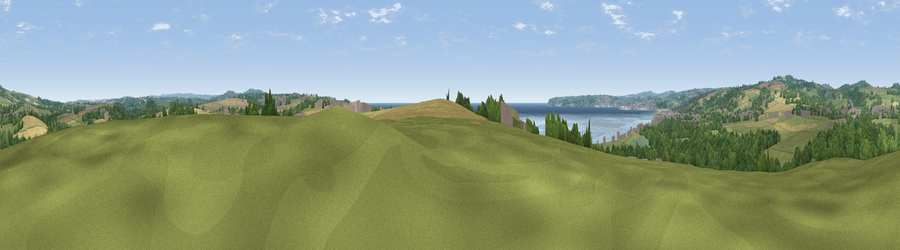

Viewpoint near Marazion
#16783 in England · top 53% of its area beats it · near MarazionWhere it is
The exact computed spot (SW 51925 31525). Click the marker for map links.
The view, rendered

A 360° render of this exact spot computed from the terrain model, tree cover and land cover — summer colours, afternoon light, calibrated against photographs of famous viewpoints. Real trees, hedges and buildings will differ in detail.
The panorama
Grey silhouette: terrain skyline in each direction (720 bearings, Earth curvature and refraction included). Dashed green: skyline with trees (+15 m) and buildings (+8 m) as obstacles. Blue strip: how far the ground is visible on each bearing.
Where the view opens
Wedge length = distance to the farthest visible ground on that bearing (vegetation-aware). Rings at 10, 25 and 50 km.
What fills the view
32% grassland · 28% woodland · 22% cropland · 12% water · 4% built-up · 1% wetland
Angular shares of the visible panorama (visual magnitude), not map area. Landscape diversity 0.66 (0–1 Shannon).
Key numbers
More beautiful places nearby
The staircase of upgrades: each row has a higher view potential than everything closer. Driving times are estimates from straight-line distance, calibrated against real road routing — check an actual route before setting out.
| Place | Direction | Drive | Score |
|---|---|---|---|
| Rose Hill | S · 1 km | ~2 min | 57.4 |
| Viewpoint near Perranuthnoe | SE · 2 km | ~5 min | 58.3 |
| Viewpoint near Perranuthnoe | SE · 4 km | ~9 min | 68.5 |
| Viewpoint near Ludgvan | NW · 4 km | ~10 min | 75.0 |
| Viewpoint near Gulval | NW · 4 km | ~10 min | 76.6 |
| Viewpoint near Lelant Saltings | N · 5 km | ~10 min | 79.2 |
| Godolphin Hill | E · 7 km | ~15 min | 81.5 |
| Viewpoint near Halsetown | NNW · 8 km | ~16 min | 82.0 |
50.13181, -5.47261 · source: screening · position refined by local search. Computed location — check access rights before visiting.